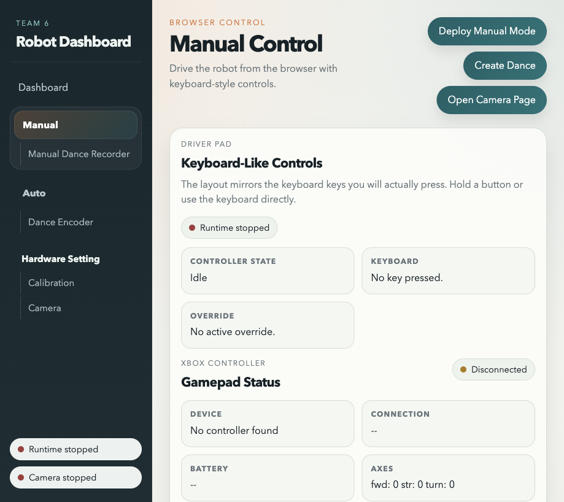
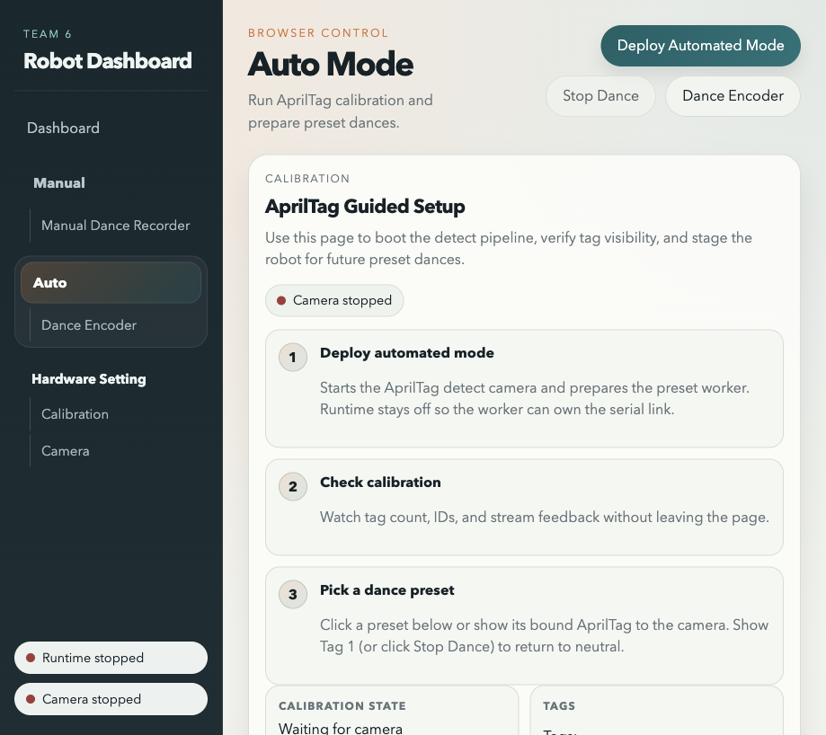
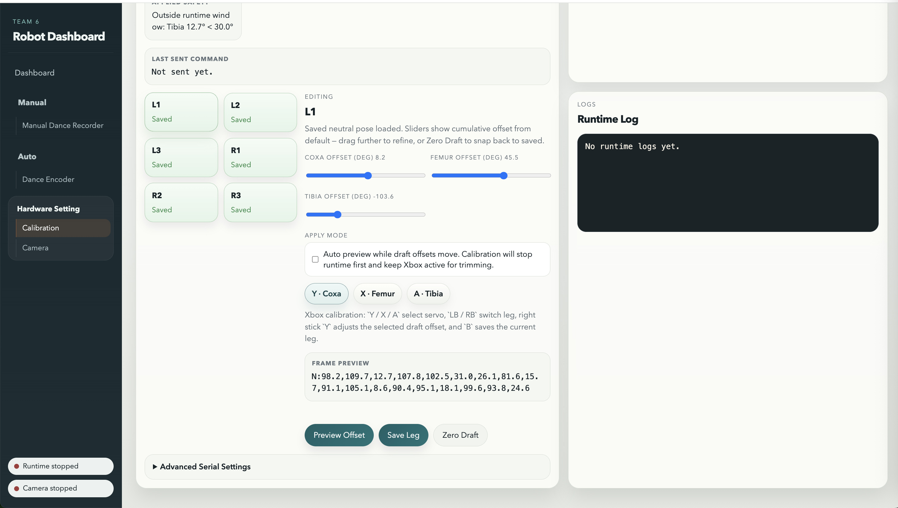
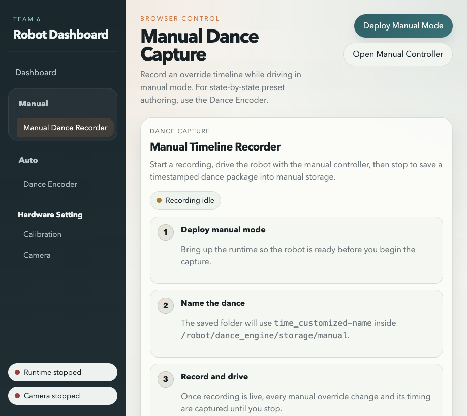
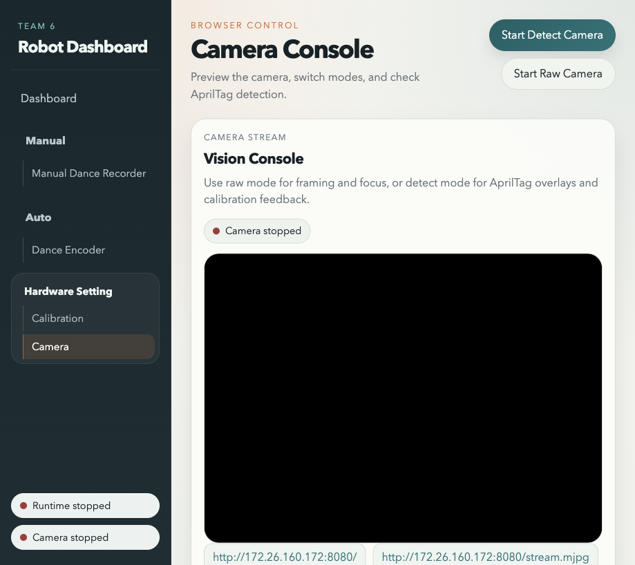
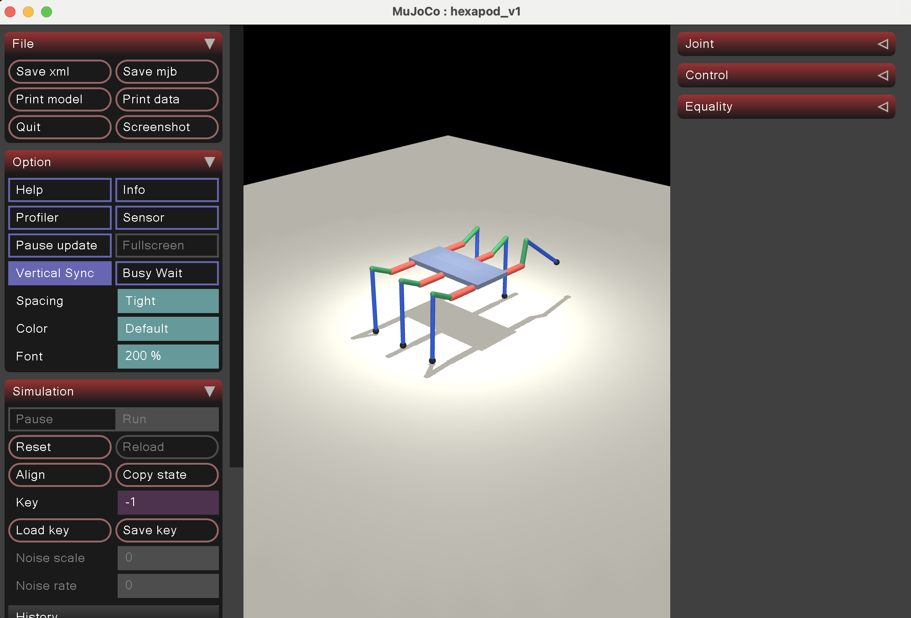
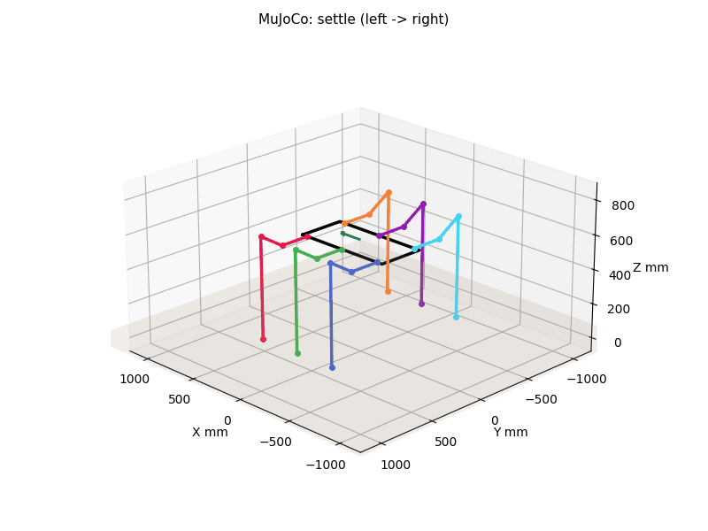
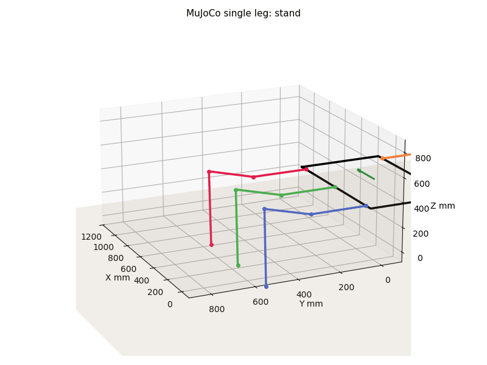
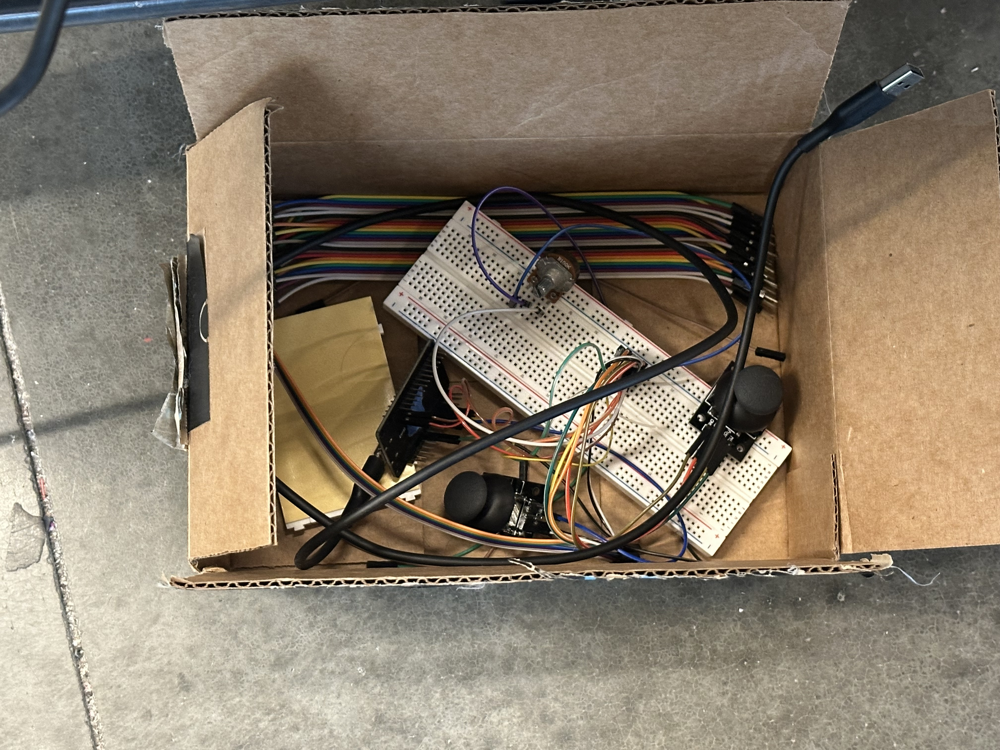

Demo Videos
Six-Leg Motion Demo
Integrated robot motion clip from the Check 3 evidence archive.
Dashboard & Calibration Screenshots







Simulation Images




Simulation GIFs



Final Robot & Hardware Photos




Vision & Control Images